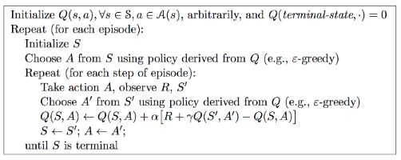
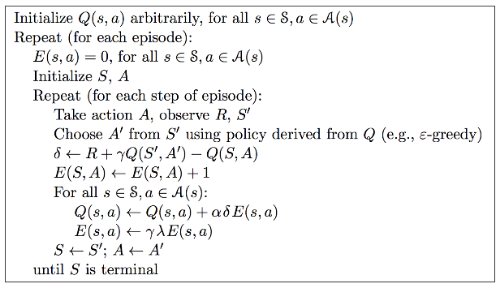
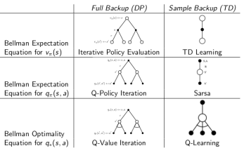

免模型控制
免模型控制可以认为是前面介绍的免模型预测的延续。
免模型控制按照环境交互的策略和目标策略是否相同可以将方法分为两种：
- On-policy: 环境交互策略和目标策略一致。就像古代皇帝微服私访，亲力亲为。
- Off-policy: 环境交互策略和目标策略不同。就像古代皇帝，派多个官员了解民情。或者机器观察人如何和环境交互，从而学习，它不直接从环境中提取经验，而是从与环境交互的智能体提取经验。。
Generalised Policy Iteration With Monte-Carlo Evaluation (On-Policy)
策略迭代之前在动态规划的控制部分就介绍过。但是它是基于MDP的一种方法，也就是它是一个有模型的方法。这里我们希望可以一般化策略迭代，使得它可以应用于无模型的领域。这一部分就介绍了带有蒙特卡罗评估的一般化策略迭代方法。
如果直接用蒙特卡罗方法替换掉动态规划的策略迭代方法里的评估部分，会发现，更新策略时候：
π′(s)=arga∈Amax(Rsa+∑Pss′aV(s′))
其中的状态转移概率不可知。因此在评估的部分，不求解v函数，而是直接求解q函数，这样在更新策略时候：
π′(s)=arga∈Amaxq(s,a)
不需要用到状态转移概率。
ε-greedy exploration
前面提出的方式存在一个问题：蒙特卡罗方法只能follow给定的策略不停采样。因此策略没有给出的路线蒙特卡罗是采样不到的。又由于策略的更新采用了greedy的方式，因此会导致一旦策略选择了某个状态下的某个action（采取这个action可以带来比较好的reward），则在下一轮的蒙特卡罗评估中，这个状态下的其他action的价值得不到更新，而这个action的价值始终比其他action高，导致下一轮的策略选择仍然会选这个action，依次类推。从而在这个状态下的其他action得不到探索的机会，但是有可能在这个状态下的某个其他的action比选定的action更好，只是在最开始少量的尝试中没有及时的表现出来。
为了更好的说明这个问题，举一个例子：
有两扇门，这两扇门背后都有奖励，但是奖励的均值不同，希望我们能找到有更大期望的门（假设第一扇门的期望更大）。首先多次采样（有限次），偶然的，第一扇门，得到价值函数1。第二扇门，价值函数2。策略更新，策略选择第二扇门。蒙特卡罗方法尝试第二扇门，第二扇门的价值函数更新，但是第一扇门的价值函数得不到更新。第二扇门的reward本身也比较好，始终能保证价值函数高于1，则第一扇门永远得不到更新。因此第一扇门没有被合理的探索过。
导致这个问题的一个重要原因在于策略的更新采用了一种贪婪的方式，也就是得到了一个确定策略，导致没有探索其他情况的可能，ε-greedy是一种解决这个问题的方式。也就是给策略引入随机性，具体的：
π(a∣s)={ε/m+1−εε/mif a=argmaxq(a,s)otherwise
m是action的数量。
同样可以证明，每次更新得到的策略的价值函数优于前一个，因此可以保证收敛。
需要注意的是ε-greedy的方式是对每一个采样结果进行一次评估的更新和一次策略的更新，而不是评估一次性利用了多个采样结果才更新一次
GLIE 蒙特卡罗控制
前面介绍的ε-greedy的方式存在问题，由于它一直在探索，因此算法始终没有终止条件。我们希望一方面可以探索到更好的状态，一方面又希望策略可以最终终止于一个最优策略。因此提出了GLIE（greedy in the limit with infinite exploration）。
GLIE具体的表现为：
- 对已经经历的状态行为会有无穷次探索
- 随着探索的进行，ε 会逐渐趋近于0
GLIE 蒙特卡罗控制：
- 采样第k个episode
- q函数评估更新，对这个episode中的每一个状态action对：
- N(St,At)←N(St,At)+1
- Q(St,At)←Q(St,At)+N(St,At)1(Gt−Q(St,At))
- 策略更新：
- ε←k1
- π←ε−greedy(Q)
也就是它的蒙特卡罗评估部分每次只迭代1轮。GLIE的加入保证了，随着策略逐渐变好，探索性逐渐降低。
TD Control (On-Policy)
Sarsa
Sarsa的基本思路就是将GLIE蒙特卡罗控制中的MC评估的部分替换成TD的评估。
SARSA的名字来源于TD的过程。首先有S和A对，环境给出reward R，到达新的状态 S，智能体遵循现有策略采取action A。这个过程拼起来是SARSA。这个过程的程式化表达：
Q(S,A)←Q(S,A)+α(R+γQ(S′,A′)−Q(S,A))
和之前一样R+γQ(S′,A′) 是走出一步之后，对之前状态价值的重新估计。Q(S,A) 是原本的估计。因此这个过程就是走出一步之后，利用新得到的reward和对后面的估计得到一个对原本状态更准确的估计，让q函数结果靠近新的估计从而修正q函数。
现时策略控制的SARSA算法

还是TD的思路，就是通过走出一步得到reward，获得更准确的估计，让q函数靠近这个估计值。
n-step Sarsa
和n-step TD 的思路是一样的，走出n步骤再评估原本状态的价值。
qt(n)Q(St,At)=Rt+1+γRt+2+γ2Rt+3+..+γnQ(St+n)←Q(St,At)+α(qt(n)−Q(St,At))
Sarsa(λ)
也是类似TD(λ). 结合各种n取值的情况。
qtλQ(St,At)=(1−λ)n=1∑∞λn−1qt(n)←Q(St,At)+α(qtλ−Q(St,At))
但是这种方式需要对每一个qt(n) 都进行计算。这种方式比较低效，因此引入资格迹（Eligibility Trace）。资格迹的引入使得不用存储之前的q，从理解的角度可以将它理解成一个类似遗忘的机制，使得实际发生的时间和当前距离越远的状态带来的更新对当前时刻该状态的影响越小。
E0(s,a)Et(s,a)=0=γλEt−1(s,a)+1(St=s,At=a)
也就是，如果实际发生了，增加1. 否则就一直衰减。
δtQ(s,a)=Rt+1+γQ(St+1,At+1)−Q(St,At)←Q(s,a)+αδtEt(s,a)
直观上的理解：如果这个sa出现出现的时间离现在很远，则少更新。这也符合sarsa(λ)给n大的q更小的权重。实际上两种表达方式是等价的。

Off-Policy Learning
Off-policy learning 一种思路是根据行为策略，将它转换为目标策略的分布
-
importance sampling：估计不同分布的期望。
EX∼P[f(x)]=∑P(X)f(X)=∑Q(x)Q(X)P(X)f(X)=EX∼Q[Q(X)P(X)f(X)]
-
TD：带有分布转换的TD
V(St)←V(St)+α(μ(At∣St)π(At∣St)(Rt+1+γV(St+1))−V(St))
其中π 为目标策略，μ 为行为策略。也可以这么看，如果目标策略不赞同行为策略的选择，则π/μ 这一项的值非常小，就不能很好的更新。
Off policy learning: 另一种介绍的是 Q learning
Q(S,A)←Q(S,A)+α[R+γamaxQ(S′,a)−Q(S,A)]
也就是它按照行为策略去走出下一步获得reward，但是估计的是下一个状态下follow目标策略后的价值。
在q-learning 中，行为策略是基于Q函数ε-greedy获得的，目标策略是q函数的greedy方式获得的。通过学习，行为策略和目标策略可以一起提升。
总结
